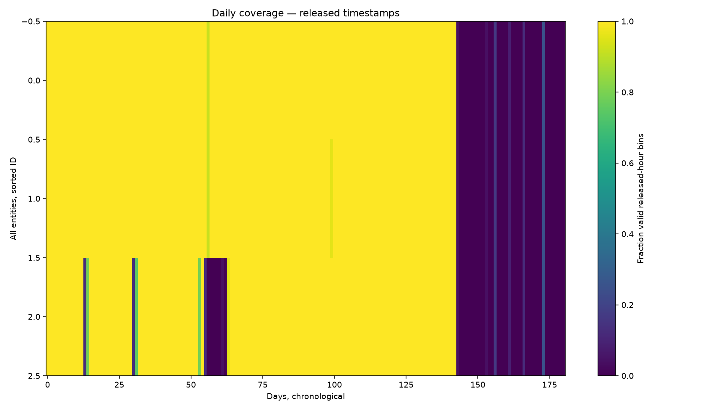
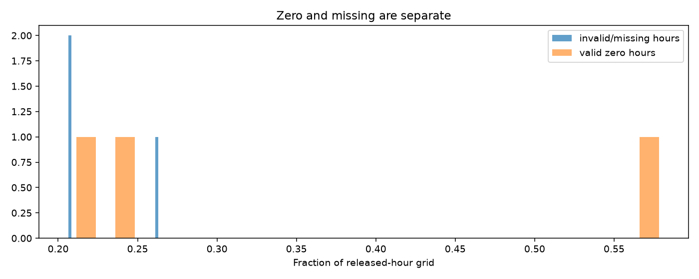
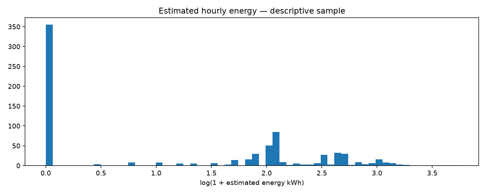
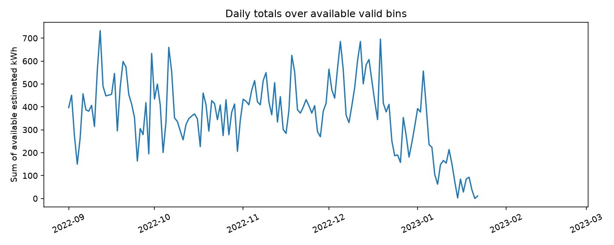
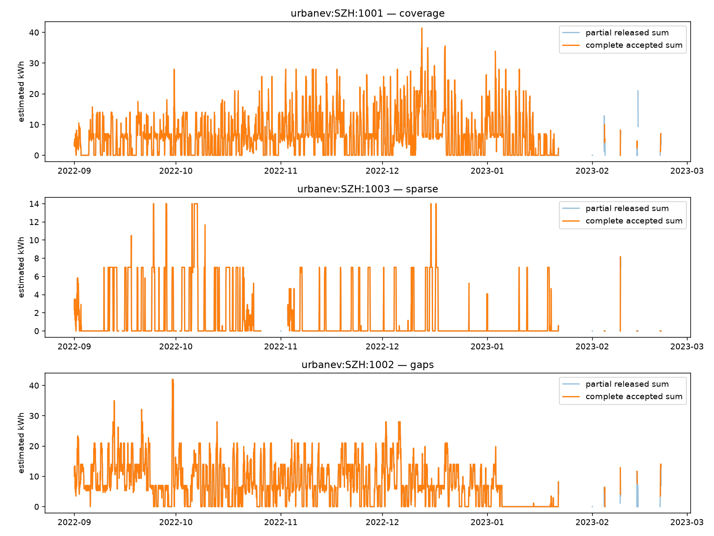
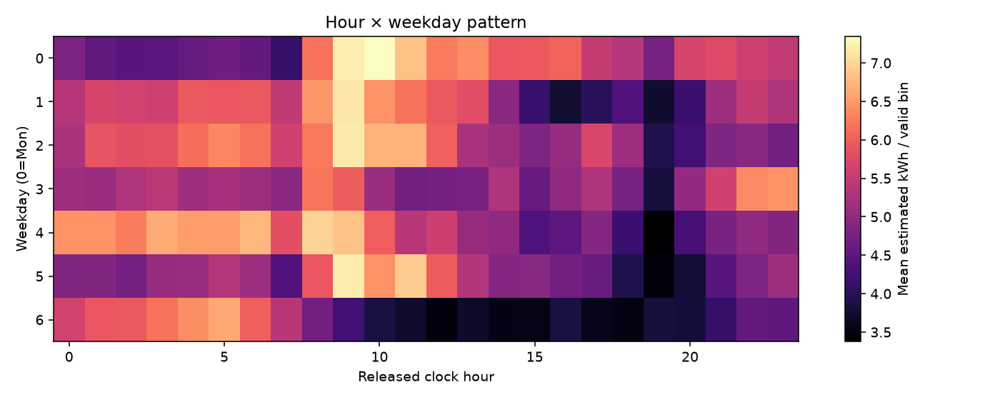
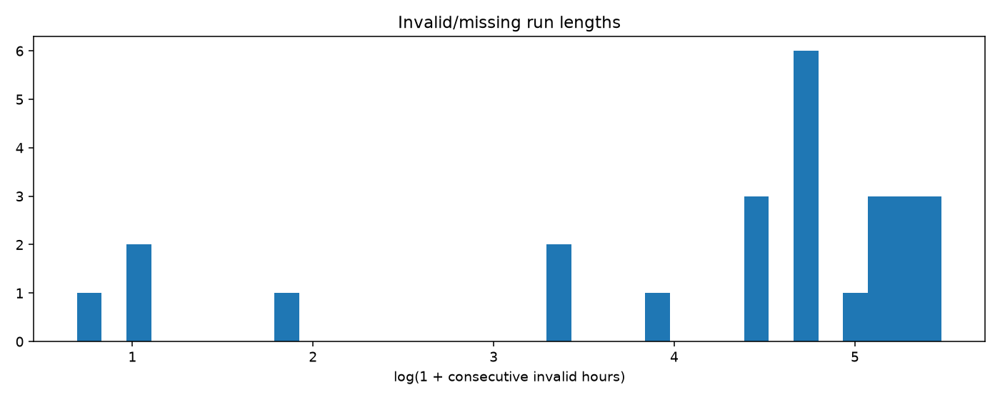
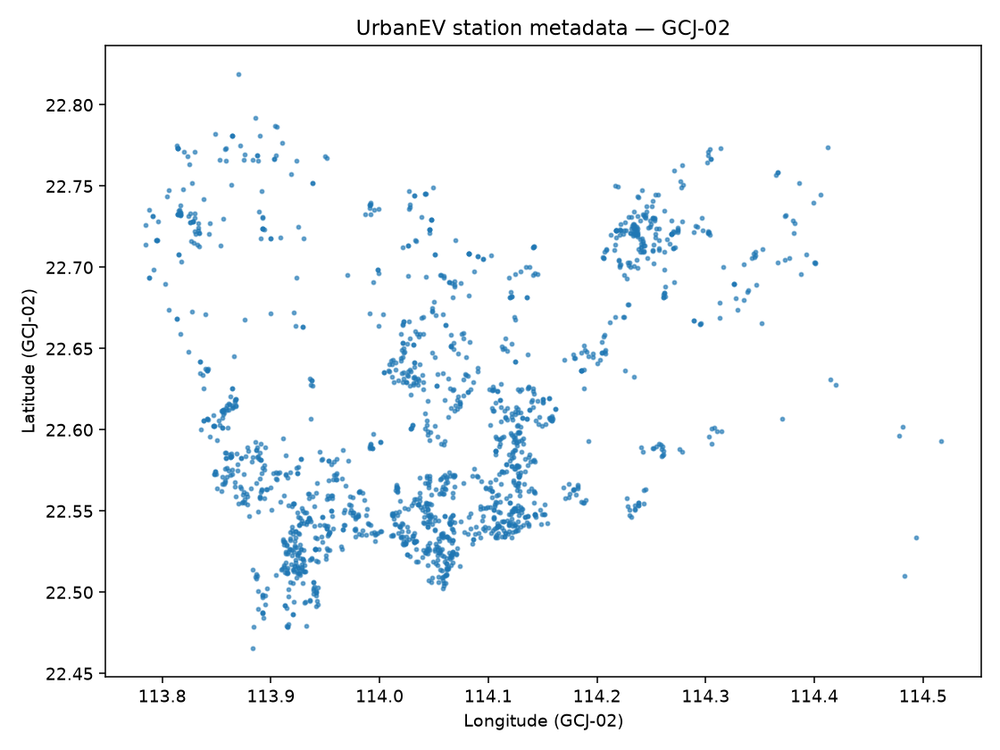

Full-period EDA is descriptive only; not used for split/model/threshold selection.
structured station-raw release, already derived volume; original pile events unavailable
candidate only: released timezone/bin/availability require verification
No scaler/imputed label/split/features/windows were created.
{
"dataset": "urbanev",
"run_id": "urbanev_smoke_20261002_02",
"entities_succeeded": 3,
"entities_failed": 0,
"scope": "smoke",
"panel_status": "candidate only: released timezone/bin/availability require verification",
"strict_online_ready": false,
"upstream_status": "structured station-raw release, already derived volume; original pile events unavailable",
"independence_status": "Shenzhen overlap not established; no cross-release native-ID mapping",
"source_sha256": "9d3f0aec34434546d082509efcdeeaea116eaa841701cc5854a9b62a27881a79",
"code_sha256": "ec47ea74e8036dd7962985f4e0cca50a7a465be51d3ddfae3ef25b24e8f86553",
"runtime": {
"pandas": "3.0.1",
"numpy": "2.5.3",
"pyarrow": "25.0.1"
},
"totals": {
"input_rows": 156384,
"exact_duplicates": 0,
"conflicting_timestamps": 0,
"malformed_timestamps": 0,
"negative_values": 0,
"nonfinite_values": 0,
"valid_hours": 10095,
"invalid_hours": 2937,
"zero_hours": 4473
},
"reconciliation_pass": true,
"panels": [
"data\\processed\\urbanev\\urbanev_smoke_20261002_02\\SZH_hourly_candidate.parquet"
]
}3 entities; coverage is file validity, not original-observation proof.

Invalid hours: 2,937; valid zero hours: 4,473.

Up to256 evenly spaced valid bins per entity, fixed deterministic rule; not full-distribution quantiles.

Coverage changes can drive totals; not a complete metered demand series.

Only validity masking/aggregation; no imputation, scaling or outlier removal.

Released clock only; timezone and DST semantics unverified. Weighted across valid entity-hour bins.

26 invalid runs; file missingness only, not hidden upstream imputation.

Coordinates from official station_information; no basemap mixing or coordinate conversion.
